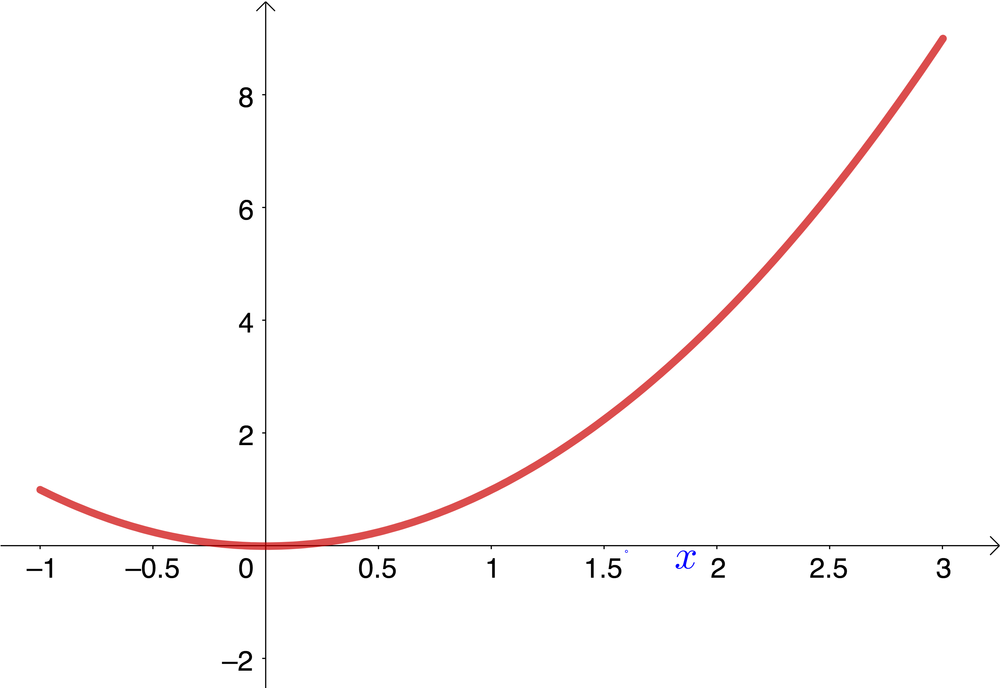
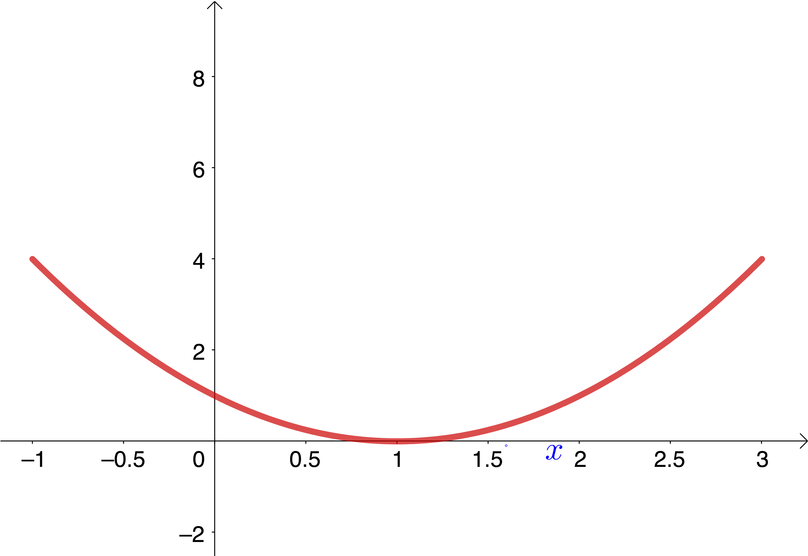
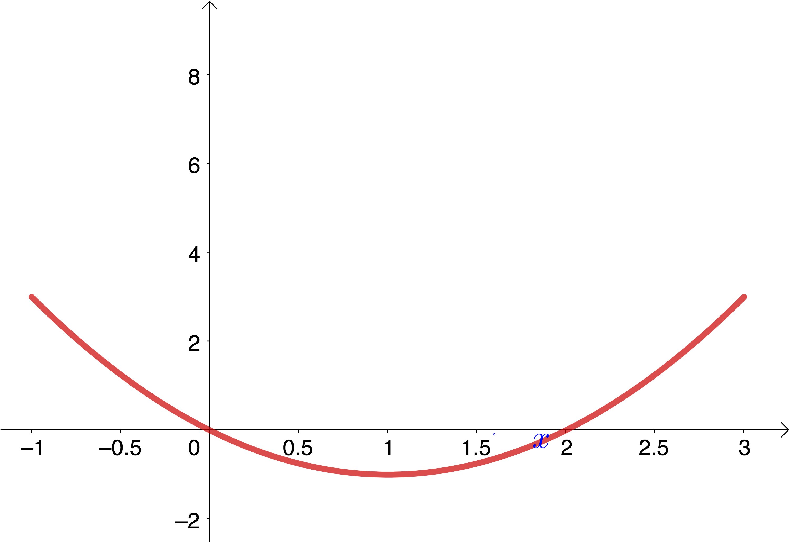
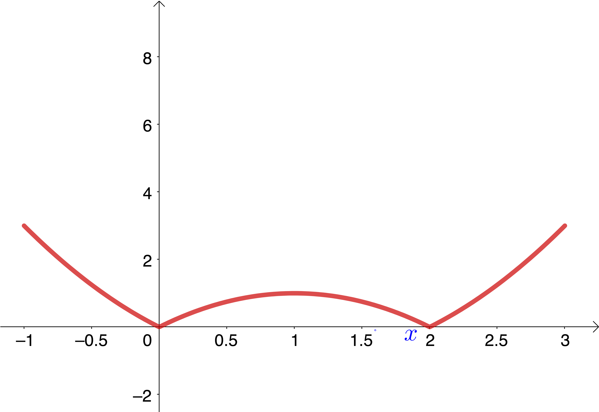
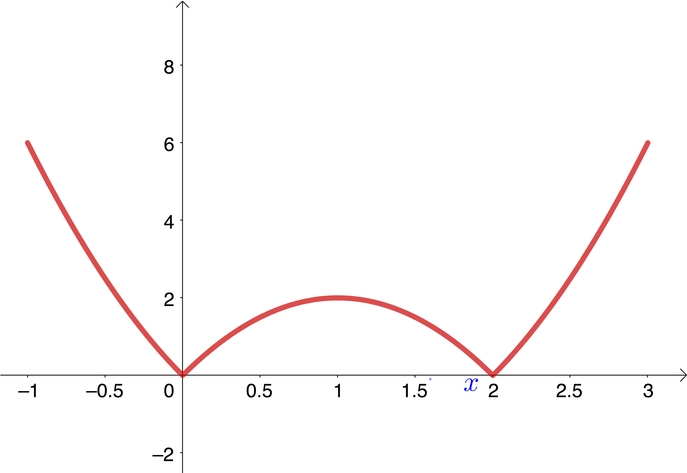
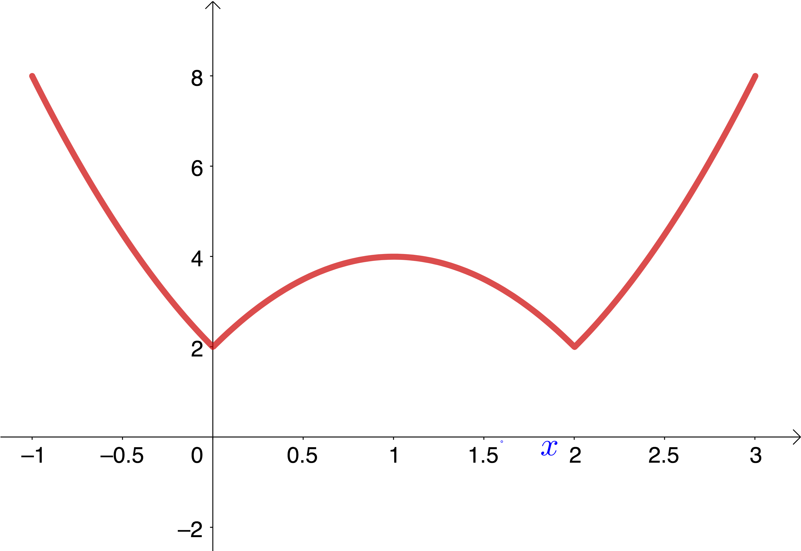
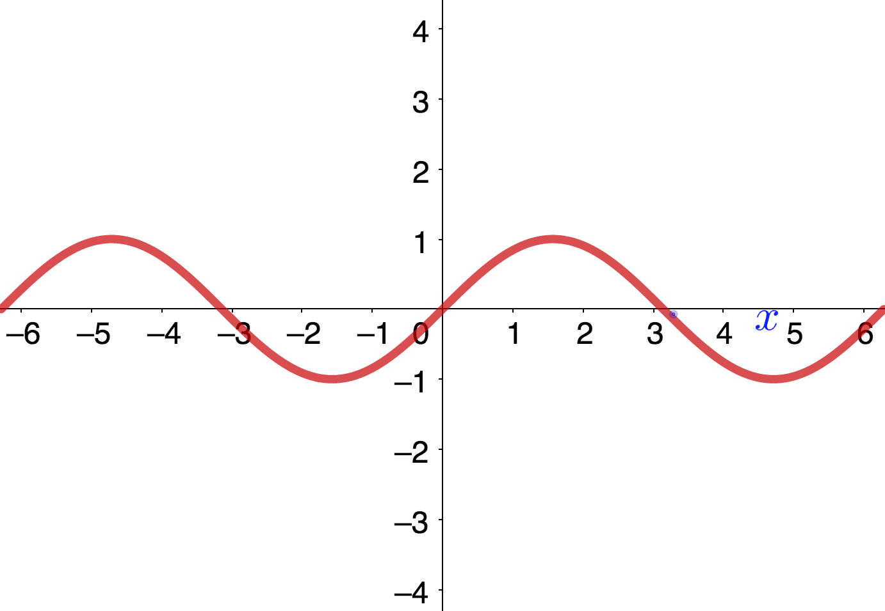
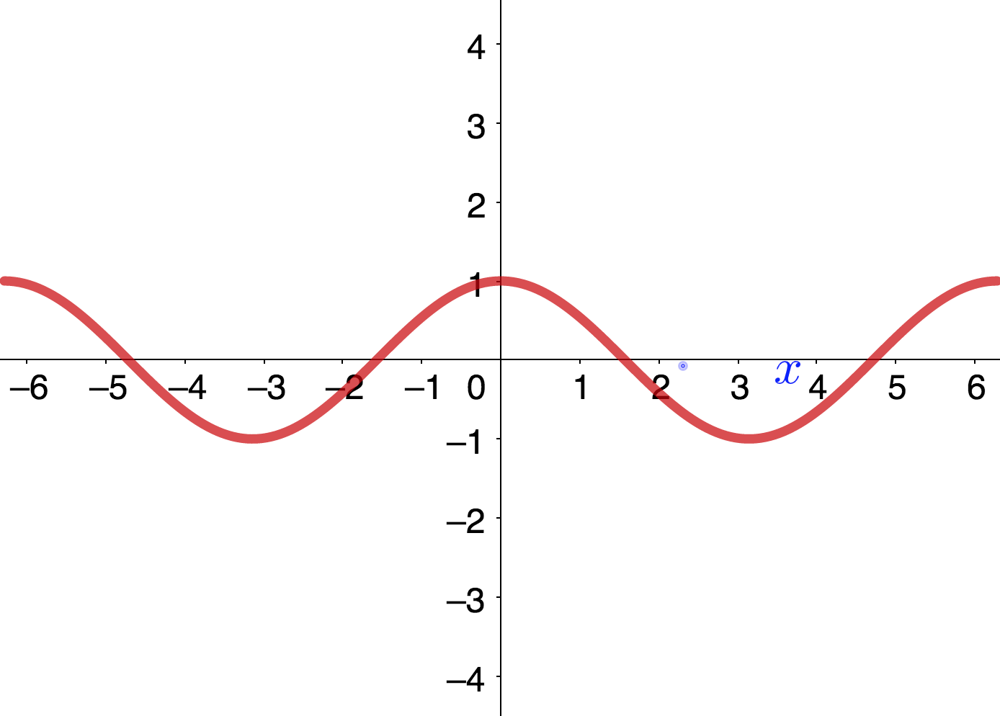
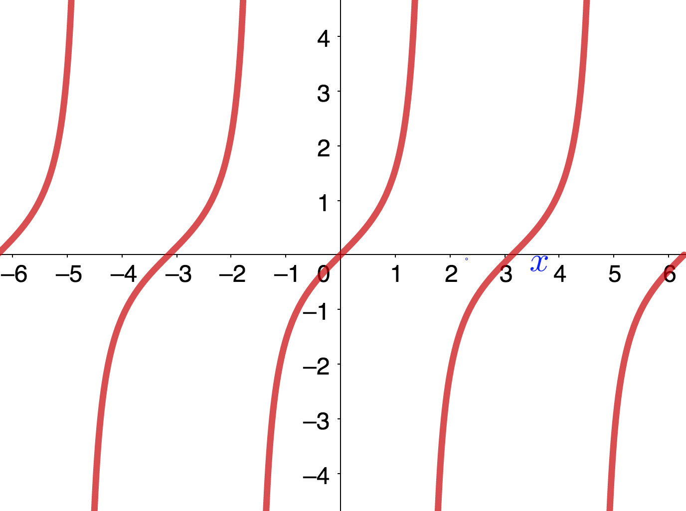

These brief notes review some background material that is assumed knowledge at the start of the course. Please have a glance through this material to check that you are familiar with all the ideas.
| Symbol | Denotes |
|---|---|
| \(\forall\) | for every |
| \(\exists\) | there exists |
| s.t. | such that |
| iff | if and only if |
The set of real numbers is denoted by \(\mathbb{R}.\)
Open interval, \((a,b)=\{x\in\mathbb{R}:a<x<b\}.\)
Closed interval, \([a,b]=\{x\in\mathbb{R}:a\le x \le b\}.\)
Half-open interval, \((a,b]=\{x\in\mathbb{R}:a<x \le b\},\) etc.
Semi-infinite interval, \((a,\infty)=\{x\in\mathbb{R}:x>a\},\) etc.
\(\mathbb{R}\) is the same as the interval \((-\infty,\infty).\)
For two sets \(A\) and \(B\) then \(A\cup B\) is the union, \(A\cap B\) is the intersection and \(A\backslash B\) is the set difference, namely, the set of all elements in \(A\) that are not in \(B.\)
The graph of a function \(f:\mathbb{R}\mapsto \mathbb{R}\) can be shifted, reflected and rescaled by applying some simple transformations to the function and its argument, as follows:
\(\bullet\) translation:
\(f(x)+a\) shifts the graph of \(f(x)\) up by an amount \(a\).
\(f(x+b)\) shifts the graph of \(f(x)\) to the left by an amount \(b\).
\(\bullet\) reflection:
\(-f(x)\) reflects the graph of \(f(x)\) about the \(x\)-axis.
\(f(-x)\) reflects the graph of \(f(x)\) about the \(y\)-axis.
\(|f(x)|\) reflects the portions of the graph of \(f(x)\) that are below the \(x\)-axis about the \(x\)-axis.
\(\bullet\) scaling:
\(\lambda f(x)\) is a vertical stretch of the graph of \(f(x)\) if \(\lambda>1\) and a vertical contraction if \(0<\lambda<1.\)
\(f(\mu x)\) is a horizontal contraction of the graph of \(f(x)\) if \(\mu>1\) and a horizontal stretch if \(0<\mu<1.\)
Combining these transformations in turn is a way to create graphs from the graph of a simpler starting function. As an example, the figure shows how to obtain the graph of the function \(f(x)=2+2|(x-1)^2-1|\) over \([-1,3]\) by starting from the function \(g(x)=x^2.\)
     
Here are some tips for graphing the reciprocal \(1/f(x)\) from the graph of \(f(x).\)
If \(f(x)\) is increasing (decreasing) then \(1/f(x)\) is decreasing (increasing).
The graphs of \(f(x)\) and \(1/f(x)\) intersect iff \(f(x)=\pm 1.\)
A rational function is a ratio of two polynomials \(f(x)=p(x)/q(x).\)
The simplified form of a rational function is obtained by removing any common factors in the numerator and denominator. \[\mbox{Eg.} \quad\quad f(x)=\frac{2x-4}{x^2-4} =\frac{2(x-2)}{(x+2)(x-2)}=\frac{2}{x+2} \quad \mbox{if} \ \ x\ne 2.\] Note that we had to exclude the point \(x=2\) in the last equality to avoid a division by zero.
If, in simplified form, \(q(a)=0\) then \(x=a\) is a vertical asymptote of the graph of \(f,\) which is a vertical line given by the equation \(x=a.\)
There can also be horizontal asymptotes though a correct treatment requires the concept of a limit, which we will study later in the course. Roughly, a horizontal asymptote involves considering the behaviour of the function when \(|x|\) is large. For rational functions a horizontal asymptote exists only if the degree of the numerator is not larger than the degree of the denominator. In this case we can write \[f(x)=\frac{p_0+p_1x+\ldots +p_nx^n}{q_0+q_1x+\ldots +q_nx^n}\] and the horizontal asymptote is the line \(y=p_n/q_n.\) In the example in the figure we have \(n=2\) and \(p_2=0,\ q_2=1,\) so the horizontal asymptote is the line \(y=0,\) which the graph approaches when \(|x|\) is large.
A rational function is called a proper rational function if the degree of the numerator is less than the degree of the denominator. A rational function can always be written as the sum of a polynomial and a proper rational function by performing long division.
Eg. \(f(x)=(1+x^6)/(x^3-x^2)\) is not a proper rational function. \[\begin{aligned} &\underline{\hskip 2cm x^3+x^2+x+1}\\ x^3-x^2 \ \ |& x^6+1\\ &\underline{x^6-x^5}\\ & \hskip 2cm x^5+1\\ &\hskip 2cm \underline{x^5-x^4}\\ & \hskip 4cm x^4+1\\ &\hskip 4cm \underline{x^4-x^3}\\ & \hskip 6cm x^3+1\\ &\hskip 6cm \underline{x^3-x^2}\\ & \hskip 8cm x^2+1\\\end{aligned}\] This yields the required decomposition \[\frac{1+x^6}{x^3-x^2}=x^3+x^2+x+1+\frac{x^2+1}{x^3-x^2}.\]
An exponential function is any function of the form \(f(x)=b^x\) where \(b\) (called the base) is a positive real number not equal to 1.
For all values of the base the graph passes through the point \((0,1).\) However, there are two types of behaviour:
\(\bullet\) If \(b>1\) the graph is increasing and has a horizontal asymptote \(y=0\) along the negative \(x\)-axis.
\(\bullet\) If \(0<b<1\) the graph is decreasing and has a horizontal asymptote \(y=0\) along the positive \(x\)-axis.
Two important properties of exponential functions are \[b^xb^y=b^{x+y} \quad \mbox{and} \quad (b^x)^y=b^{xy}.\] There is a special value of the base (called the natural base) \(b=e=2.718...,\) where \(e\) is called Euler’s number and is transcendental (like \(\pi\)) ie. it is not the root of a polynomial equation with rational coefficients. One way to calculate \(e\) is via the sum \[e=1+\frac{1}{1!}+\frac{1}{2!} +\frac{1}{3!} +\frac{1}{4!} +\ldots\] The function \(f(x)=e^x\) is usually referred to as the exponential function.
An exponential function \(f(x)=b^x\) admits an inverse \(f^{-1}(x)\). To determine this write \(y=f^{-1}(x)\) so that \(f(y)=x\) ie. \(b^y=x.\) This is the defining relation of a logarithm function \(g(x)=\log_b x=f^{-1}(x)\) which is simply the name given to the inverse of an exponential function \(f(x)=b^x.\) Explicitly, \(y=\log_b x\) iff \(b^y=x.\)
Notation: I shall use the notation \(\log x\) as the shorthand for the logarithm \(\log_e x,\) which is known as the natural logarithm.
Warning: This notation is not universal as some people use \(\ln x\) to denote the natural logarithm and instead use \(\log x\) to denote \(\log_{10} x.\)
A logarithm grows very slowly for \(x\) large and positive (more slowly than a linear function) and has a vertical asymptote at \(x=0\) (see the figure).
Some important properties of logarithms are:
\(\bullet\) \(\log_b 1=0\) from \(b^0=1\).
\(\bullet\) \(\log_b b^x =x\) from the definition as the inverse of an exponential.
\(\bullet\) \(\log_b(\alpha\beta)=\log_b\alpha+\log_b\beta\) from \(b^\alpha b^\beta=b^{\alpha+\beta}\).
\(\bullet\) \(\log_b(\alpha/\beta)=\log_b\alpha-\log_b\beta\) from \(b^\alpha/b^\beta=b^{\alpha-\beta}\).
\(\bullet\) \(\log_b(x^r)=r\log_b x\) from \((a^x)^r=a^{xr}\).
There is an equivalent definition of the logarithm as an integral. For \(t\in(0,\infty)\) we can define \[\log t=\int_1^t \frac{1}{x}\,dx.\]
In the figure we illustrate the logarithm function in terms of areas under the curve \(y=\frac{1}{x}\). For \(t_1>1\) then \(\log t_1\) is the area \(A_1\) and for \(0<t_2<1\) then \(\log t_2\) is minus the area \(A_2.\)
The indefinite integral \(\int \frac{1}{x}\,dx=\log x\) is only valid for \(x>0.\) However, we can extend this relation for the indefinite integral to all \(x\ne 0\) as \(\int \frac{1}{x}\,dx=\log|x|.\) It is easy to prove this result by considering the derivative of \(\log(-x)\) for \(x<0.\)
If \(n\) is a positive integer then \(x^n\) has the obvious definition of \(x\) multiplied by itself \(n\) times. Also, \(x^{-n}=1/x^n.\)
We define \(x^\frac{1}{n}\) as the inverse function of \(y^n\) in the interval \((0,\infty),\) which has \(x^\frac{1}{n}>0\) and \((x^\frac{1}{n})^n=x \ \ \ \forall \ x\in(0,\infty).\)
If \(q\) is an integer then we define \(x^\frac{q}{n}=(x^\frac{1}{n})^q\) for \(x>0.\) From this definition we have that \[x^\frac{q}{n} =\exp(\log(x^\frac{1}{n})^q) =\exp(q\log(x^\frac{1}{n})) =\exp(\frac{q}{n}n\log(x^\frac{1}{n})) =\exp(\frac{q}{n}\log(x^\frac{1}{n})^n)\] \[=\exp(\frac{q}{n}\log x).\] Thus for any rational number \(r=q/n\) we have that for \(x>0\) \[x^r=\exp(r\log x).\]
If \(a\) is irrational (eg. \(a=\sqrt{2}\)) then we take this formula as a definition of \(x^a,\) \[x^a=\exp(a\log x).\]
Defn. A function \(f(x)\) is periodic if \(\exists \ p>0 \ \) s.t. \(f(x+p)=f(x) \ \forall \ x.\)
The smallest such value of \(p\) is called the period of \(f.\)
The simplest periodic functions are the trigonometric functions \(\sin x\) and \(\cos x\) with period \(2\pi.\) The function \(\tan x=\sin x/\cos x\) has period \(\pi\). with vertical asymptotes at \(x=(\frac{1}{2}+n)\pi.\)
  
It is expected that you know the values of the trigonometric functions at the particular values of the argument shown in the table, plus those related by the symmetries apparent in the plots shown in the figure.
| radians | 0 | \(\pi/6\) | \(\pi/4\) | \(\pi/3\) | \(\pi/2\) |
| degrees | 0 | 30 | 45 | 60 | 90 |
| \(\sin\) | 0 | \(\frac{1}{2}\) | \(\frac{1}{\sqrt{2}}\) | \(\frac{\sqrt{3}}{{2}}\) | 1 |
| \(\cos\) | 1 | \(\frac{\sqrt{3}}{{2}}\) | \(\frac{1}{\sqrt{2}}\) | \(\frac{1}{2}\) | 0 |
It is also expected that you know the important trigonometric identities:
\(\bullet\) \(\sin^2 x+\cos^2 x=1.\)
\(\bullet\) addition formulae, \(\sin(x\pm y)=\sin x \cos y\pm \cos x\sin y\), & \(\cos(x\pm y)=\cos x \cos y\mp \sin x \sin y\)
\(\bullet\) double angle formulae, \(\sin 2x=2\sin x\cos x,\) & \(\cos 2x=2\cos^2 x-1=1-2\sin^2 x\)
\(\bullet\) half-angle formulae, \(\sin^2 x=\frac{1}{2}-\frac{1}{2}\cos 2x\), & \(\cos^2 x=\frac{1}{2}+\frac{1}{2}\cos 2x\)
The reciprocals of the trigonometric functions have their own notation:
\(\mbox{csc}\ x=1/\sin x, \quad \mbox{sec}\ x=1/\cos x, \quad \mbox{cot}\ x=1/\tan x=\cos x/\sin x.\)
The above formulae lead to related formulae for these functions eg. \(\sec^2 x=1+\tan^2 x.\)
Hyperbolic functions are defined in terms of the exponential function via \[\sinh x=\frac{1}{2}(e^x-e^{-x}),\quad \cosh x=\frac{1}{2}(e^x+e^{-x}),\quad \tanh x=\sinh x/\cosh x.\]
From the properties of the exponential function it is easy to show that some basic properties include
\(\bullet\) \(\sinh 0=0\) and \(\cosh 0=1.\)
\(\bullet\) If \(x>0\) then \(0<\sinh x<\cosh x.\)
\(\bullet\) Addition formulae, \(\sinh(x\pm y)=\sinh x\cosh y\pm \cosh x\sinh y\), &
\(\cosh(x\pm y)=\cosh x\cosh y\pm \sinh x\sinh y\).
\(\bullet\) Double argument formulae, \(\sinh(2x)=2\sinh x\cosh x\), & \(\cosh(2x)=\sinh^2 x+ \cosh^2 x.\)
\(\bullet\) \(\cosh^2 x -\sinh^2 x=1.\)
The reciprocals of hyperbolic functions have their own notation:
\(\mbox{cosech}\,x={1}/{\sinh x}, \quad \mbox{sech}\,x={1}/{\cosh x}, \quad \mbox{coth}\,x={1}/{\tanh x}.\)
The above formulae lead to related formulae for these functions eg. \(\mbox{sech}^2\, x=1-\tanh^2 x.\)
You are expected to know the following rules of differentiation.
If \(f(x)\) and \(g(x)\) are differentiable at \(x\) then so are the following:
\(\bullet\) sum rule:
\(f(x)+g(x)\) with derivative \(f'(x)+g'(x).\)
\(\bullet\) product rule:
\(f(x)g(x)\) with derivative \(f'(x)g(x)+f(x)g'(x).\)
and providing \(g(x)\ne 0\) then so are the following:
\(\bullet\) reciprocal rule:
\(\frac{1}{g(x)}\) with derivative \(-\frac{g'(x)}{(g(x))^2}.\)
\(\bullet\) quotient rule:
\(\frac{f(x)}{g(x)}\) with derivative \(\frac{f'(x)g(x)-f(x)g'(x)}{(g(x))^2}.\)
Eg. Differentiate \(u(x)=(3x^2-1)/(x^4+3x+1)\) \[u'(x)=\frac{(3x^2-1)'(x^4+3x+1)-(3x^2-1)(x^4+3x+1)'}{(x^4+3x+1)^2}\] \[=\frac{6x(x^4+3x+1)-(3x^2-1)(4x^3+3)}{(x^4+3x+1)^2} =\frac{6x^5+18x^2+6x-(12x^5+9x^2-4x^3-3)}{(x^4+3x+1)^2}\] \[=\frac{-6x^5+4x^3+9x^2+6x+3}{(x^4+3x+1)^2}.\]
A closed form expression is a function obtained from elementary functions by a finite sequence of elementary operations. \[\mbox{Eg.} \quad \frac{e^{x^2}+\sin(1+x^2)}{x^4+e^{\cos x}} \quad \mbox{is a closed form expression}.\] A basic problem in integration is given a closed form expression \(f(x)\) can we find a closed form expression for its indefinite integral \(F(x)=\int f(x)\,dx\) ?
In general this is not possible, for example, \(\int e^{-x^2}\,dx\) does not have a closed form expression.
The game is to try and reduce \(\int f(x)\,dx\) to some standard integrals by using a number of rules of integration eg. integration by parts, substitution,...
Some standard integrals that you are expected to know include \[\begin{aligned} &&\int x^a\,dx=\frac{x^{a+1}}{a+1}\,+c, \quad \mbox{for constant $a\neq -1$}\\ &&\int \frac{1}{x}\,dx=\log|x|\,+c\\ &&\int e^x\,dx=e^x\,+c\\ &&\int \sin x\,dx=-\cos x\,+c\\ &&\int \cos x\,dx=\sin x\,+c\\ &&\int \mbox{sec}^2 x\,dx=\tan x\,+c\\ &&\int \mbox{cosec}^2 x\,dx=-\mbox{cot} x\,+c\\ &&\int \frac{1}{1+x^2}\,dx=\tan^{-1}x\,+c\\ &&\int \frac{1}{\sqrt{1-x^2}}\,dx=\sin^{-1}x\,+c\\ &&\int \frac{1}{\sqrt{1+x^2}}\,dx=\mbox{sinh}^{-1}x\,+c\\\end{aligned}\]
\[\int f(x)g'(x)\,dx=f(x)g(x)-\int f'(x)g(x)\,dx.\] Eg.\[\int x^2e^{3x}\,dx=\frac{1}{3}x^2e^{3x}-\int \frac{2}{3}xe^{3x}\,dx =\frac{1}{3}x^2e^{3x}-\frac{2}{9}xe^{3x}+\int \frac{2}{9}e^{3x}\,dx\] \[=\frac{1}{3}x^2e^{3x}-\frac{2}{9}xe^{3x}+\frac{2}{27}e^{3x}\,+c .\] \[\mbox{Eg.}\ \ \int x\cos x\,dx= x\sin x-\int \sin x\,dx=x\sin x+\cos x\,+c.\hskip 5cm\] \[\mbox{Eg.}\ \ \int \log x\,dx=\int (\log x) 1\,dx= (\log x)x-\int \frac{1}{x}x\,dx=x\log x-x+c=x(\log x-1)+c.\] \[\mbox{Eg.}\ \ \int e^x\cos x\,dx= e^x\sin x-\int e^x\sin x\,dx=e^x\sin x+e^x\cos x-\int e^x\cos x\,dx.\] \[\mbox{Hence }\quad \int e^x\cos x\,dx =\frac{1}{2}e^x(\sin x+\cos x)\,+c.\hskip 7cm\]
If \(F(x)=\int f(x)\,dx\) then \(F(u(x))=\int f(u(x))\,u'(x)\,dx.\)
In more compact notation, by making the substitution from \(x\) to \(u(x)\) we have \[\int f(x)\, dx=\int f(u)\, du,\ \quad \mbox{where} \quad du=u'(x)\, dx.\] Eg. Calculate \(\int \frac{x}{2+3x^4}\,dx.\)
Make the substitution \(u=\sqrt{\frac{3}{2}}x^2\) then \(du=\sqrt{6}x\, dx\) and \[\int \frac{x}{2+3x^4}\,dx =\int \bigg(\frac{1}{\sqrt{6}}\bigg)\frac{1}{2+2u^2}\,du =\int \bigg(\frac{1}{2\sqrt{6}}\bigg)\frac{1}{1+u^2}\,du =\frac{1}{2\sqrt{6}}\tan^{-1}u\,+c\] \[=\frac{1}{2\sqrt{6}}\tan^{-1}(\sqrt{\frac{3}{2}}x^2)\,+c.\] Eg. Calculate \(\int \tan x\,dx.\)
Put \(u=\cos x\) then \(du=-\sin x\, dx\) and \[\int \tan x\,dx =\int \frac{\sin x}{\cos x}\,dx =\int -\frac{1}{u}\,du=-\log |u|\,+c=-\log |\cos x|\,+c.\]
Eg. Calculate \(\int_0^\frac{\pi}{2} \cos^3 x\,dx.\)
Put \(u=\sin x\) then \(du=\cos x\, dx.\)
When \(x=0\) then \(u=0\) and when \(x=\pi/2\) then \(u=1.\) Therefore \[\int_0^\frac{\pi}{2} \cos^3 x\,dx =\int_0^\frac{\pi}{2} \cos x(1-\sin^2x)\,dx =\int_0^1 (1-u^2)\,du=\bigg[u-\frac{1}{3}u^3\bigg]_0^1=1-\frac{1}{3}=\frac{2}{3}.\] Eg. Calculate \(\int \frac{1}{(x^2+4)^2}\,dx.\)
Put \(x=2\tan u\) then \(dx=2\sec^2 u\, du\) and \[\int \frac{1}{(x^2+4)^2}\,dx =\int \frac{2\sec^2 u\, du}{(4\tan^2u+4)^2} =\int \frac{(\tan^2 u+1)\, du}{8(\tan^2u+1)^2} =\int \frac{du}{8(\tan^2u+1)}\] \[=\int \frac{1}{8}\cos^2u\,du =\int \frac{1}{16}(1+\cos 2u)\,du =\frac{1}{16}(u+\frac{1}{2}\sin 2u) =\frac{1}{16}(u+\sin u\cos u)\] \[=\frac{1}{16}\bigg(u+\frac{\tan u}{\sec^2u}\bigg) =\frac{1}{16}\bigg(u+\frac{\tan u}{1+\tan^2u}\bigg) =\frac{1}{16}\bigg(\tan^{-1}\frac{x}{2}+\frac{\frac{x}{2}}{1+\frac{x^2}{4}}\bigg)\] \[\mbox{Thus} \quad \int \frac{1}{(x^2+4)^2}\,dx =\frac{1}{16}\bigg(\tan^{-1}\frac{x}{2}+\frac{2x}{4+x^2}\bigg)\,+c.\]
For a general function \(f(x)\) the formula \[\int \frac{f'(x)}{f(x)}\, dx=\log |f(x)|\,+c\] is a simple application of integration by substitution.
Simply put \(u=f(x)\) so that \(du=f'(x)\,dx.\) Then \[\int \frac{f'(x)}{f(x)}\, dx=\int \frac{1}{u}\,du =\log|u|\,+c=\log |f(x)|\,+c.\] \[\mbox{Eg.}\quad \int \frac{x^3+1}{x^4+4x+7}\,dx=\frac{1}{4}\log|x^4+4x+7|\,+c. \hskip 6cm\]
Given a rational function, first of all decompose it into a polynomial and a proper rational function. As the integration of a polynomial is trivial we can now restrict attention to the integration of proper rational functions.
Every proper rational function can be written as a sum of partial fractions which take the form \[\frac{A}{(x-\alpha)^k} \quad \mbox{and} \quad \frac{Bx+C}{(x^2+\beta x+\gamma)^l}\] where the quadratic that appears in the above has no real roots.
The number and type of partial fractions that appear depends on the factors in the denominator of the rational function.
Each factor in the denominator of the form \((x-\alpha)^k\) generates a partial fraction of the form \[\frac{A_1}{(x-\alpha)}+ \frac{A_2}{(x-\alpha)^2}+...+ \frac{A_k}{(x-\alpha)^k}.\] Each factor in the denominator of the form \((x^2+\beta x+\gamma)^l\) generates a partial fraction of the form \[\frac{B_1x+C_1}{(x^2+\beta x+\gamma)}+ \frac{B_2x+C_2}{(x^2+\beta x+\gamma)^2}+... +\frac{B_lx+C_l}{(x^2+\beta x+\gamma)^l}.\] The coefficients \(A_k,B_l,C_l\) can be found directly by comparison with the rational function either by the substitution of specific values of \(x\) or by comparing coefficients of \(x\). The integration is then completed by integrating the partial fraction.
Eg. Calculate \(\int \frac{2x}{x^2-x-2}\, dx.\) \[\frac{2x}{x^2-x-2}=\frac{2x}{(x-2)(x+1)} =\frac{a}{x-2}+\frac{b}{x+1}.\] To determine \(a\) and \(b\) multiply the above by \((x-2)(x+1)\) to give
\(2x=a(x+1)+b(x-2).\) Putting \(x=2\) yields \(4=3a\) and putting \(x=-1\) yields \(-2=-3b\) hence \[\frac{2x}{x^2-x-2} =\frac{\frac{4}{3}}{x-2}+\frac{\frac{2}{3}}{x+1}.\] Integrating this expression gives the required integral \[\int \frac{2x}{x^2-x-2}\, dx =\int\ \frac{\frac{4}{3}}{x-2}+\frac{\frac{2}{3}}{x+1} =\frac{4}{3}\log|x-2|+\frac{2}{3}\log|x+1|\,+c.\]
Eg. Calculate \(\int \frac{2x^2+3}{x^3-2x^2+x}\, dx.\) \[\frac{2x^2+3}{x^3-2x^2+x}= \frac{2x^2+3}{x(x-1)^2} =\frac{a}{x}+\frac{b}{x-1}+\frac{c}{(x-1)^2}\] As \(2x^2+3=a(x-1)^2+bx(x-1)+cx\) then putting \(x=0\) gives \(a=3,\) while \(x=1\) gives \(5=c.\) Comparing coefficients of \(x^2\) gives \(2=a+b\) thus \(b=-1.\) \[\int \frac{2x^2+3}{x^3-2x^2+x}\, dx =\int \frac{3}{x}-\frac{1}{x-1}+\frac{5}{(x-1)^2}\, dx =3\log|x|-\log|x-1|-\frac{5}{x-1}\,+C.\]
Eg. Calculate \(\int \frac{3x^4+x^3+20x^2+3x+31}{(x+1)(x^2+4)^2}\, dx.\) \[\frac{3x^4+x^3+20x^2+3x+31}{(x+1)(x^2+4)^2} =\frac{a}{x+1}+\frac{bx+c}{x^2+4}+\frac{dx+f}{(x^2+4)^2}\] It is an exercise to show that \(a=2,\ b=1,\ c=0,\ d=0,\ f=-1.\) \[\int \frac{3x^4+x^3+20x^2+3x+31}{(x+1)(x^2+4)^2}\, dx =\int \frac{2}{x+1}+\frac{x}{x^2+4}-\frac{1}{(x^2+4)^2}\,dx\] \[=2\log|1+x|+\frac{1}{2}\log(x^2+4) -\frac{1}{8}\bigg(\frac{x}{x^2+4}\bigg)-\frac{1}{16}\tan^{-1}\frac{x}{2} \,+C.\]